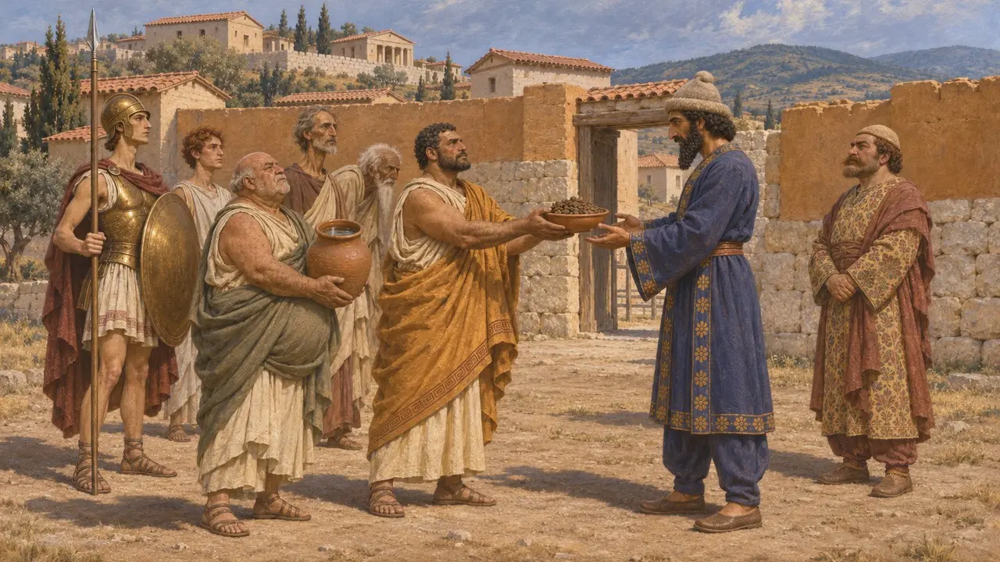
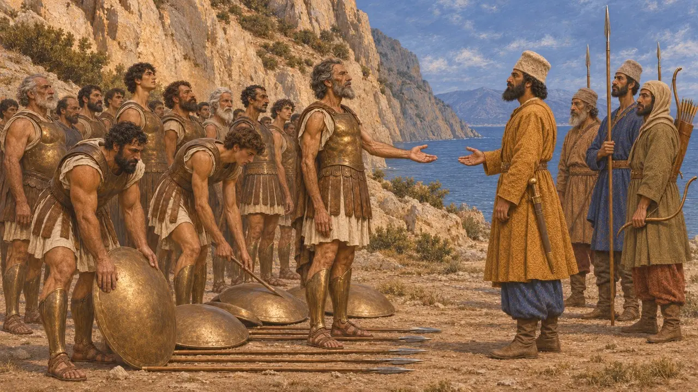
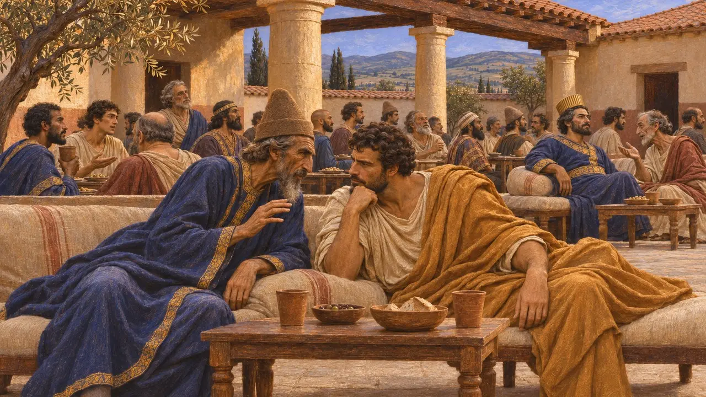
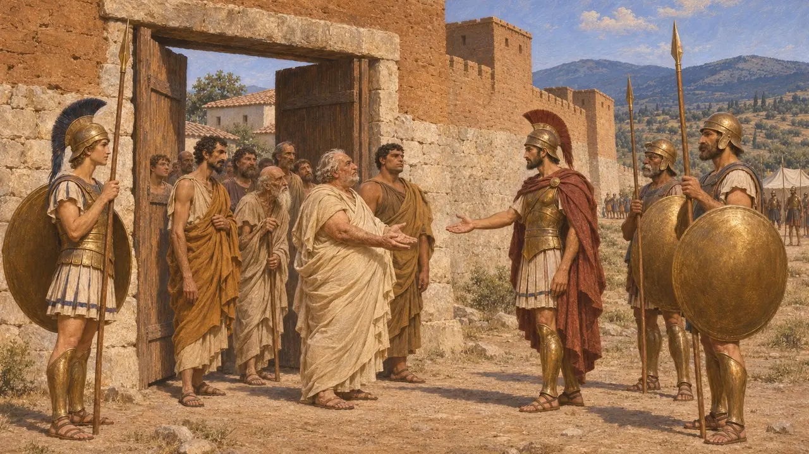
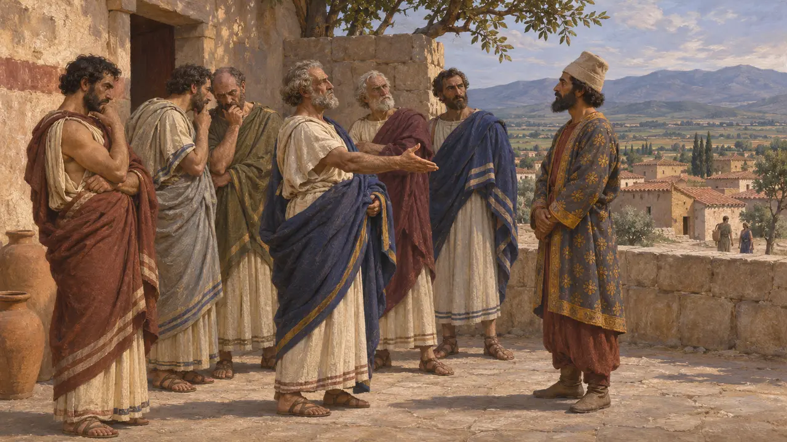

كانت طيبة أقوى مدن بيوتيا، الإقليم الواقع شمال غربي أثينا. وحين غزا خشايارشا بلاد اليونان عام 480 ق.م انحازت إلى الملك، وفي عام 479 ق.م صارت أراضيها قاعدةً لجيش ماردونيوس. وقد أنهت هزيمة الفرس في بلاتيا، على تخوم طيبة، ذلك التحالف، وتركت لطيبة بين سائر اليونانيين سمعةً دائمة بـ«الميدية»، أي الانحياز إلى جانب الفرس.
في اللعبة: تُظهر اللعبة طيبة حليفةً لماردونيوس، وهذا ثابت تاريخيًا لعامَي 480-479. أما دورها شريكًا تجاريًا فتبسيط من اللعبة: إذ لا يصف أي مصدر قديم طيبة شريكًا تجاريًا لفارس.

الانحياز إلى الملك عام 480
رواية قديمةيذكر هيرودوت الطيبيين بين اليونانيين الذين قدّموا التراب والماء لرسل خشايارشا علامةً على الخضوع. ويقول إنه لم يرفض ذلك من البيوتيين سوى ثيسبياي وبلاتيا. وبعد ثرموبيلاي، تولّى مقدونيون أرسلهم الإسكندر حراسة المدن البيوتية التي خضعت، دلالةً على أنها في صف الملك. أما ثيسبياي وبلاتيا فقد أُحرقتا.
Herodotus 7.132; 8.34; 8.50

الطيبيون في ثرموبيلاي
متنازع عليهيذكر هيرودوت أن ليونيداس أخذ معه 400 من الطيبيين بقيادة ليونتياديس ليختبر مدينة يُشتبه في ميلها إلى الفرس، واحتفظ بهم رهائن. ويقول إنهم استسلموا في اليوم الأخير ووُسموا بالعلامة الملكية. أما ديودوروس فيقول إن هؤلاء الطيبيين كانوا من الحزب المعادي للفرس. ووصف بلوتارخ، وهو بيوتي، رواية هيرودوت بأنها افتراء، ولا يزال المؤرخون يتجادلون في مدى تعبيرها عن العداء اللاحق لطيبة.
Herodotus 7.205; 7.222; 7.233; Diodorus 11.4; Plutarch, On the Malice of Herodotus

قاعدة ماردونيوس عام 479
رواية قديمةيذكر هيرودوت أن الطيبيين حثّوا ماردونيوس على أن يعسكر في بيوتيا وأن يستميل المدن اليونانية بالرشى لا بالقتال. فأقام ماردونيوس معسكره على امتداد نهر أسوبوس في أرض طيبة وبنى هناك حظيرة محصّنة. ويروي هيرودوت أيضًا خبر وليمة أقامها الطيبي أتاغينوس في طيبة لماردونيوس وخمسين من الفرس، وفيها تنبّأ ضيف فارسي سرًّا بأن معظم الجيش سيهلك عمّا قريب.
Herodotus 9.2; 9.15-16; 9.41

بلاتيا وحصار طيبة
رواية قديمةفي بلاتيا قاتل البيوتيون الأثينيين قتالًا شديدًا، ويذكر هيرودوت أن ثلاثمئة من وجهاء الطيبيين سقطوا. وبعد ذلك حاصر باوسانياس طيبة وطالب بتسليم الزعماء الموالين للفرس، وعلى رأسهم تيماغينيداس وأتاغينوس. وفي اليوم العشرين سلّمتهم المدينة. ففرّ أتاغينوس وعفا باوسانياس عن أبنائه، أما الآخرون فاقتيدوا إلى كورنثوس وأُعدموا.
Herodotus 9.67; 9.86-88

لماذا اختارت طيبة فارس
متنازع عليهفي عام 427 قال خطباء طيبة للإسبرطيين إن مدينتهم كانت في عام 480 تحت حكم زمرة ضيقة من المتنفذين لا تحت حكم المواطنين جميعًا، فلا ينبغي أن تُحمَّل المدينة اللوم. ويشير كثير من المؤرخين أيضًا إلى التنافس القديم بين طيبة وأثينا التي كانت قد بسطت حمايتها على بلاتيا. ولا يزال الجدل قائمًا حول إلى أي حدّ كان ذلك الخيار خيارَ فئة، وإلى أي حدّ كان خيارَ المدينة كلها.
Thucydides 3.62; Herodotus 6.108
المصادر
- Herodotus, Histories, books 7-9
- Thucydides 3.62
- Plutarch, On the Malice of Herodotus
- Diodorus 11.4
- P. Briant, From Cyrus to Alexander, 2002